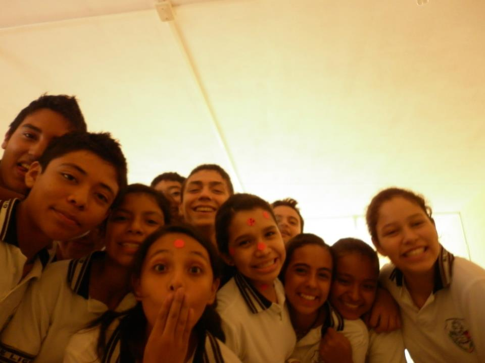
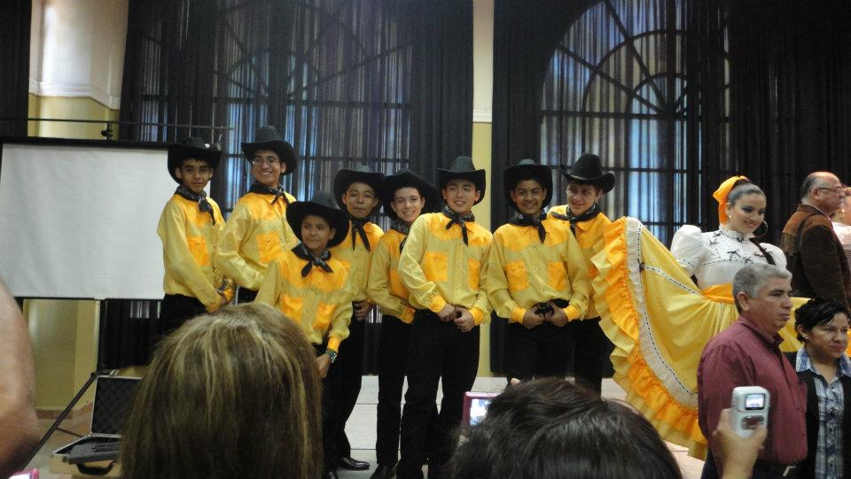
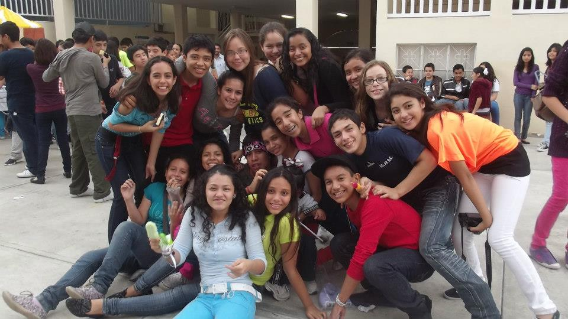

ING. SISTEMAS COMPUTACIONALES
Y ELECTRONICOS
GUSTAVO ADRIAN VAZQUEZ MEZA
"A"
danza folklorica
Amistad
¿Que quiero ser?
¿Que quiero estudiar?
- Dibujar
- Matematicas
- Hablar en publico
Teoria de la relatividad - Premio Nobel

Creador de Mickey Mouse- 22 premios

“No es grande aquel que nunca falla, si no aquel que nunca se da por vencido.”